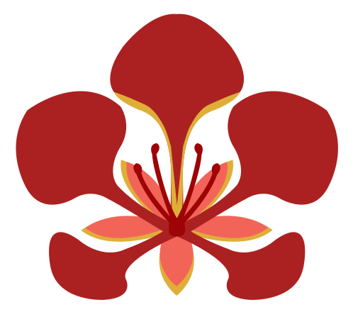
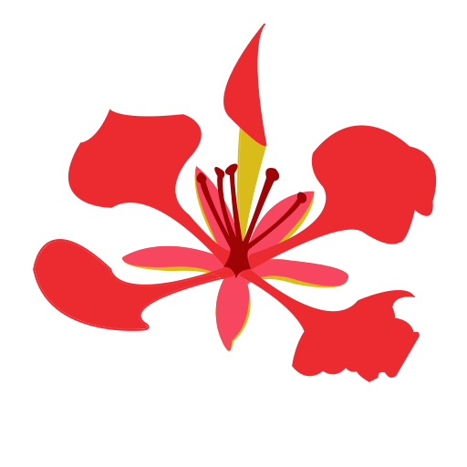

Explorar el catálogo
Consulta árboles y plantas con su nombre común, científico y familia, y filtra por tipo de planta, origen y hábitat.
Ir al catálogo →
FloraGirardotDescubre la flora de
Árboles y plantas del municipio de Girardot: cómo son, de dónde vienen, dónde encontrarlos y por qué importan. Y tú puedes ayudar a enriquecer el catálogo con tus propios avistamientos.

Consulta árboles y plantas con su nombre común, científico y familia, y filtra por tipo de planta, origen y hábitat.
Ir al catálogo →Cada ficha técnica reúne su descripción, su importancia ecológica y un mapa con los puntos de Girardot donde se ha registrado.
Reporta una planta con su ubicación y una fotografía. Un equipo de revisión la verifica antes de publicarla.
Participar →FloraGirardot es un proyecto de impacto ecológico y social que busca documentar y dar a conocer la flora del municipio de Girardot, Cundinamarca, con la participación de su comunidad.
Regístrate como ciudadano para poder enviar reportes.
Elige la especie del catálogo (o indica otra), cuenta dónde la viste y adjunta una foto.
Investigadores y administradores revisan tu reporte; si se aprueba, aparece en Participación. Puedes ver el estado de tus reportes en cualquier momento.